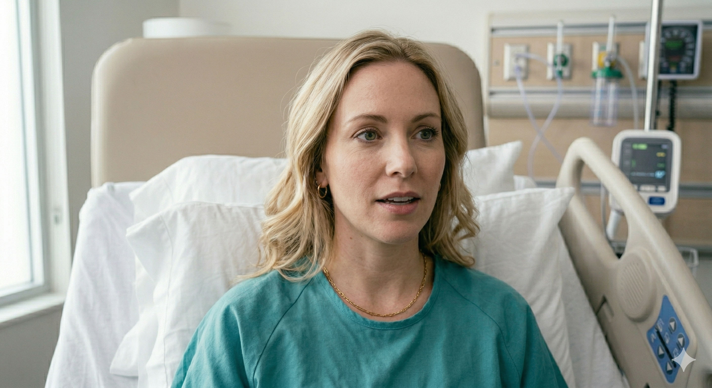

Mrs. Ramirez, 35. Admitted with a high WBC count.
The patient is exhibiting signs of Leukostasis. Priority: EKG and O2 assessment.
Elena, 24. Reporting sudden, sharp RLQ pain.
RLQ pain suggests appendicitis. Prioritize physiological assessment over psychosocial fears.

Emily Thompson, 32 year-old.
4 hours after a vaginal birth with a second degree lacerations and periurethral tear, no other complications. Last assessment was two hours earlier with the following findings: U/U, firm and midline, lochia rubra moderate, perineum reddened, edematous, incision intact, no drainage or bleeding. Voided once, two hours earlier. Breastfeeding, last feeding was one hour earlier, breasts soft, nipples intact.Potential hemorrhage or dehiscence. Requires immediate vital sign assessment.